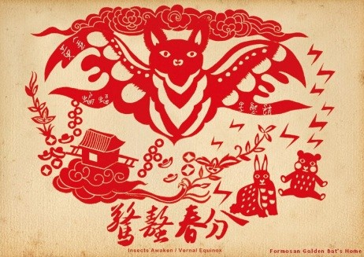
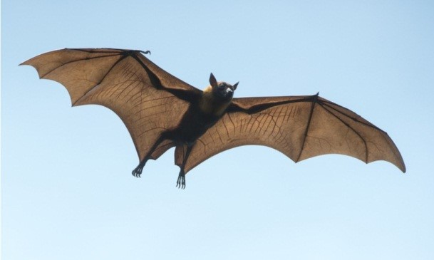
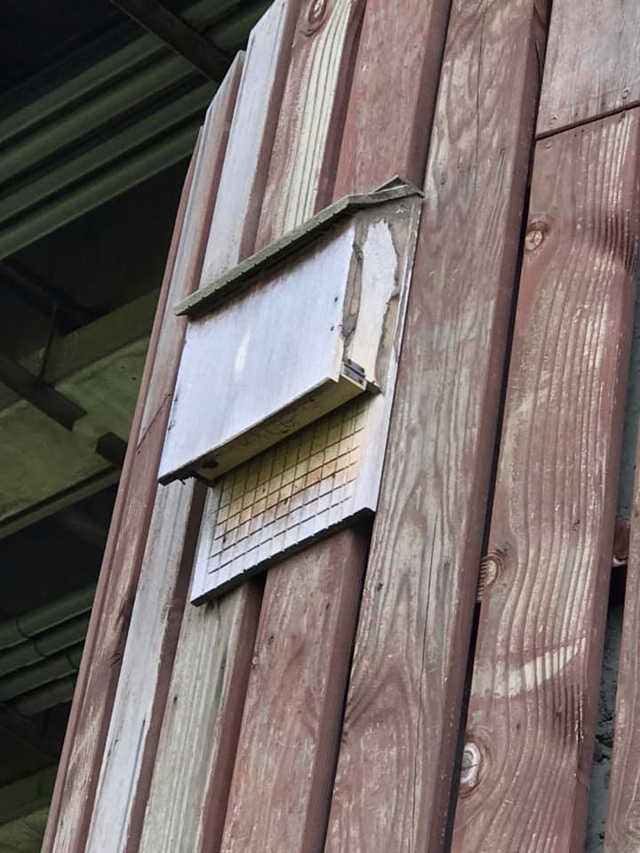
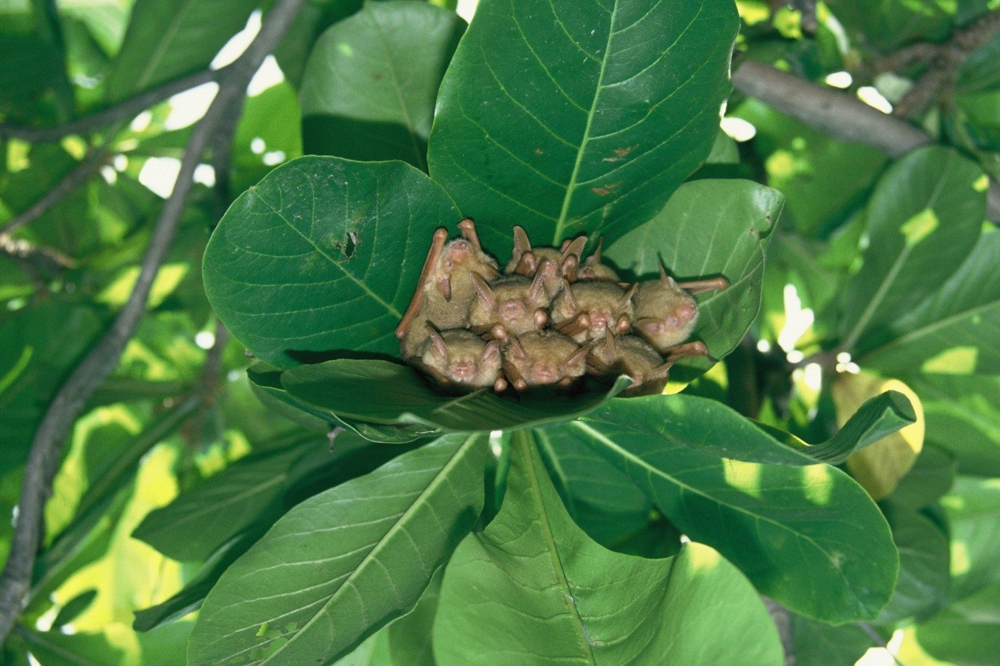
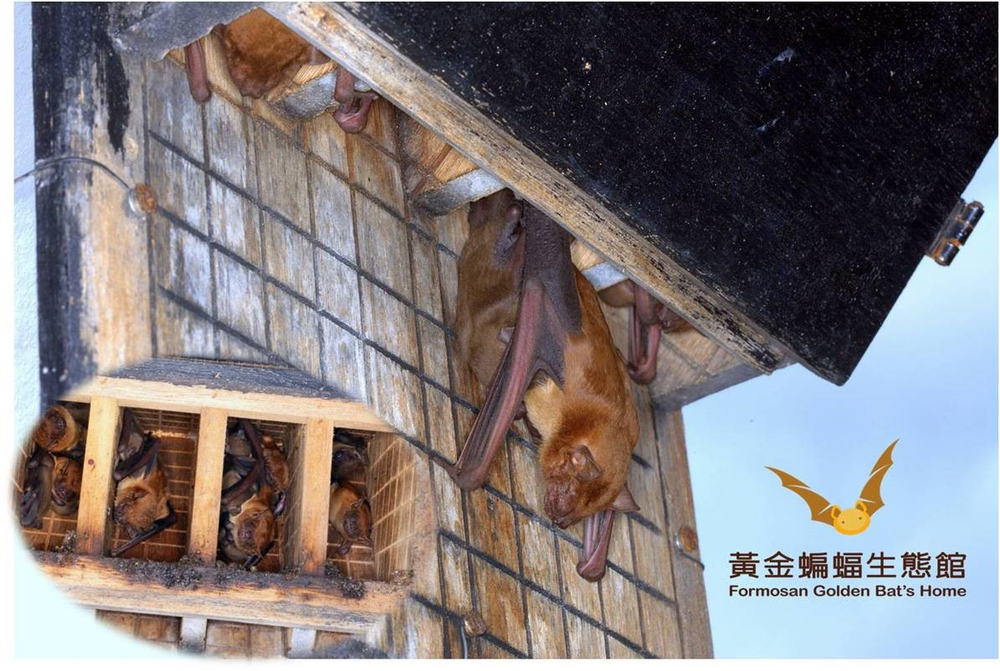
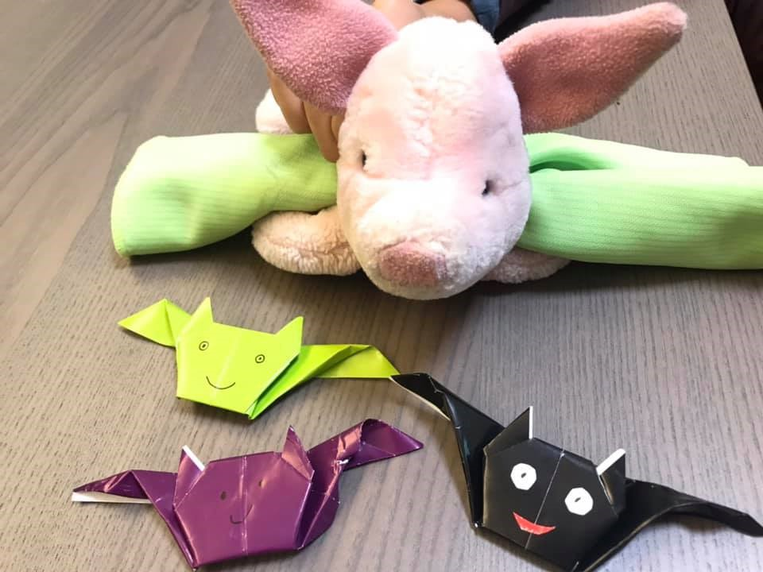

1. 你看得出來這張漂亮的剪紙中，上面最大隻的動物是什麼嗎？
2. 為了保育蝙蝠，在五股濕地這裡有特製的蝙蝠屋，請抬頭找一找（提示：在高架橋的柱子上）
 (圖片來源：https://www.commonhealth.com.tw/article/article.action?nid=80980)
3. 想一想為什麼要製作蝙蝠屋？
看正解~4. 蝙蝠數量減少對人類有影響嗎？
看正解~
5. 廣設蝙蝠屋，防治登革熱影片
圖片網頁 http://www.goldenbat.org.tw/about/origin-and-purpose
6. 蝙蝠是屬於
7. 為什麼蝙蝠會飛卻不是鳥類？
看正解~8. 蝙蝠會吸血嗎？蝙蝠很邪惡嗎？請點圖片進來看
9. 今天沒看到蝙蝠沒關係，以下提供觀察蝙蝠的季節、時間點和地點
建議的時間－夏季晴朗的清晨或傍晚
建議的地點－路燈下或棲所外
10. 怎麼判斷看到的是鳥還是蝙蝠？
看正解~
11. 給小蜂和小蟻的任務:回家後開啟這個摺紙教學，做完將可愛的蝙蝠摺紙貼在荒野記錄本中。
（影片很清楚，不難喔！大約十分鐘可以完成）